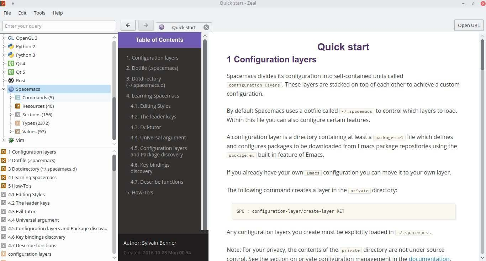

Son muchas las razones por las que resulta necesario disponer de cierta documentación sin depender de una conexión a la web, ya sea porque bajo ciertas limitaciones y circunstancias el acceso a la red resulta inviable o bien por simples cuestiones prácticas. Pero lo que no podemos negar es que todos sentimos cierto grado de frustración cuando vemos imposible el acceso a dicho recurso, el cual forma parte integral de la actividad que estamos o pretendemos desempeñar. Con el panorama anterior en mente, a continuación describiré una posible solución a esta problemática.
Dash
Kapeli's Dash, o sencillamente Dash, es una API, navegador de documentación y gestor de fragmentos de código o "snippets", el cual cuenta con más de 150 conjuntos de documentación "offline" o mejor conocidos cómo Dash docsets mismos que, en su mayoría, pueden descargarse libremente. Aunado a lo anterior, también existe la posibilidad de crear docsets personalizados, ya sea para nuestro uso personal o bien para compartirlos con otros.
Cabe destacar que a pesar de que Dash solo se encuentra disponible para dispositivos Apple es posible utilizar los docsets que ofrece por medio de algunas aplicaciones alternativas que disponen de soporte para diversas plataformas y sistemas operativos.
Dash docsets
Un Dash docset o simplemente docset es, básicamente, un directorio que lleva por descripción el nombre de la documentación o referencia, seguido por el prefijo .docset, a modo de extensión. El directorio alberga en su interior los siguientes elementos:
- Archivos de documentación —archivos de imagen o multimedia, HTML, JavaScript y CSS—: Todos ellos conforman la documentación a tratar.
- Una base de datos SQLite: La cual cumple la función de indexar los archivos de documentación y su contenido, mismo que se encuentra clasificado de forma especifica por la o las personas responsables de la creación del docset.
Creación de Dash docsets con Dashing
Dashing es una aplicación mutiplataforma y de propósito general, escrita en lenguaje GO, que facilita la elaboración de docsets a partir de documentos en formato HTML, empleando para ello el uso de selectores CSS3 para clasificar su contenido, además de ofrecer las siguientes características:
- Indexación de páginas.
- Permitir establecer un icono personalizado.
- Auto generación de tablas de contenido.
- Dispone de soporte para la utilización de expresiones regulares.
Nota: Debido a lo anterior, resulta indispensable, más no imprescindible, el contar con nociones básicas en cuanto a diseño o maquetación web se refiere.
En Arch Linux y derivadas es posible su instalación desde AUR:
yaourt -S dashing
Información: Para otras distribuciones GNU/Linux es posible su instalación al recurrir al Makefile que se encuentra en el repositorio. Los usuarios de OS X pueden recurrir a algún binario precompilado ofrecido oficialmente en el repositorio oficial del proyecto.
Ejemplo práctico: Creación de Spacemacs.docset
Antes de comenzar, resulta indispensable contar con los archivos de documentación cómo primer paso, para ello tendremos que recurrir a la utilización de un "web crawler". En este tutorial recurriré a HTTraQt, un "front-end" de HTTrack, para descargar los archivos HTML desde la documentación oficial de Spacemacs, sin embargo, la elección de la utilidad a emplear es a título personal, siéntase libre de elegir otra alternativa si así lo prefiere.
Información: HTTrack es una aplicación —araña web o "web crawler"— cuya finalidad es la de descargar páginas en formato HTML para su consulta sin conexión. Cuenta con versiones para GNU/Linux, Microsoft Windows y Android.
Una vez superado el paso anterior, procedemos a situarnos en el directorio empleado por la araña web, mismo que pasaré a denominar como <directorio_de_trabajo>, para posteriormente crear el archivo que nos permitirá establecer las características y funcionalidades que dispondrá el docset.
Desde una terminal, introduzca lo siguiente:
cd rm -rf {external.html,index.html,backblue.gif,fade.gif,hts-log.txt,hts-cache}
dashing init
Nota: La instrucción que aparece en la línea número 2 solo es aplicable si el lector se decantó por HTTraQt/HTTrack, la eliminación de dichos archivos y directorios resulta necesaria ya que estos son creados automáticamente por dicha aplicación y no resultan ser de utilidad al usuario final —se recomienda crear una copia del directorio original, a modo de respaldo, para que pueda ser empleado en futuras actualizaciones de la documentación—.
El procedimiento descrito en la línea número 3 creará el archivo dashing.json cuyo contenido es el siguiente:
{
"name": "Dashing",
"package": "dashing",
"index": "index.html",
"selectors": {
"dt a": "Command",
"title": "Package"
},
"ignore": [
"ABOUT"
],
"icon32x32": "",
"allowJS": false,
"ExternalURL": ""
}
La descripción de la notación del archivo es la siguiente:
- name: Nombre del paquete.
- index: Archivo índice, por defecto, para los archivos de documentación.
- icon32x32: Nombre del archivo de imagen, en formato PNG, que servirá como icono del docset.
- ExternalURL: La URL base de la documentación.
- selectors: Un mapa de selectores —CSS3—. El valor designado a cada selector debe corresponder a algún tipo de dato establecido por Dash.
- ignore: Secciones de contenido a ser excluidas.
Información: Si requiere de asistencia para la designación del tipo de dato a emplear para cada selector, puede recurrir a la siguiente documentación: Docset Generation Guide, prestando especial atención a la sección: Supported Entry Types.
En la tabla que aparece a continuación detallo los selectores utilizados, así como su descripción, para la creación del docset de ejemplo:
| Selector | Tipo de dato | Descripción |
|---|---|---|
| div.outline-2 h2 | Resource | Recurso o tópico del documento. |
| div.outline-3 h3 | Section | Sección del documento. |
| code | Type | Combinaciones de teclas de acceso, parámetros, entre otros. |
| div.org-src-container pre.src-sh | Command | Acciones a realizar desde la línea de comandos. |
| div.org-src-container pre.src-emacs-lisp | Value | Valores de configuración —Emacs-Lisp—. |
Nota: Para el procedimiento anterior es necesario analizar la estructura de los archivos de documentación —específicamente de los archivos HTML— con la intención de establecer algún tipo de relación entre los selectores que contiene y los tipos de datos ofrecidos por Dash. En algunas ocasiones estos últimos no contarán con una correspondencia bastante clara por lo que queda a criterio del responsable de la creación del docset escoger el tipo de dato más adecuado para tal fin.
Una vez definidos los selectores correspondientes se procede a completar los parámetros faltantes. He aquí el contenido del archivo dashing.json después de haber sido actualizado:
{
"name": "Spacemacs",
"package": "Spacemacs",
"index": "spacemacs.org/doc/QUICK_START.html",
"selectors": {
"div.outline-2 h2": "Resource",
"div.outline-3 h3": "Section",
"code": "Type",
"div.org-src-container pre.src-sh": "Command",
"div.org-src-container pre.src-emacs-lisp": "Value"
},
"icon32x32": "spacemacs.png",
"allowJS": false,
"ExternalURL": "http://spacemacs.org/doc/QUICK_START.html"
}
Cómo último paso, se procede a la creación del docset:
dashing build
En este punto se debería obtener como resultado la creación del directorio Spacemacs.docset —ubicado dentro del directorio de trabajo—, el cual contiene todos los archivos requeridos por Dash.
Utilizar Zeal cómo alternativa a Dash
Zeal es un navegador de documentación sin conexión, desarrollado en Qt5, y completamente compatible con Dash, el cual se encuentra disponible para los siguientes sistemas operativos: Microsoft Windows, GNU/Linux y BSD, siendo posible su instalación en Arch Linux y derivadas a través de pacman:
sudo pacman -S zeal
Información: Si desea efectuar su instalación en otras plataformas, por favor, recurra a la sección de descargas, localizada en la página oficial de Zeal.
Una vez instalada la aplicación, basta con copiar cualquier docset a la carpeta ~/.local/share/Zeal/Zeal/docsets para poder hacer uso del mismo.
Ejemplo:
mkdir -p ~/.local/share/Zeal/Zeal/docsets
cp -R /Spacemacs.docset ~/.local/share/Zeal/Zeal/docsets/
Nota: El procedimiento anterior sólo es aplicable en distribuciones GNU/Linux.
Información: Por favor consulte la documentación oficial o recurra al repositorio oficial de Zeal para obtener asistencia en la ubicación de la ruta donde se almacenan los docsets para plataformas distintas a GNU/Linux.
Por último, solo resta abrir Zeal para comprobar que se encuentra listado el docset para su consulta:
Información: Spacemacs.docset se encuentra disponible para su descarga en el siguiente enlace.
Comments
comments powered by Disqus